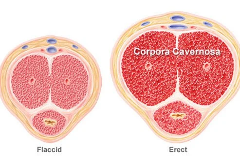

What Is Erectile Dysfunction (ED)?
Erectile dysfunction (ED) is when a man has persistent problems achieving and/or sustaining an erection. Erectile dysfunction
can make sexual intercourse impossible without treatment. Erectile dysfunction can first emerge in a man as early as 40 according to the Massachusetts Male Aging Study on sexual dysfunction. They also found that an estimated 18 to 30 million
men are affected by erectile dysfunction.
Does Erectile Dysfunction Mean Poor Libido?
Erectile dysfunction refers specifically to problems achieving or maintaining an erection. Other forms of male sexual dysfunction include poor
libido and problems with ejaculation. Men with erectile dysfunction often have a healthy libido, but their bodies fail to respond in the sexual encounter by producing an erection. Usually there is a physical basis for the problem. Can
Low Testosterone (Low T) Cause Erectile Dysfunction? While low T isn’t the only cause of erectile dysfunction, the two do seem to be connected. However, the connection between low testosterone and erectile dysfunction is complicated. Researchers
believe two are connected because they both seem to coincide as a man ages. However, some men with low testosterone continue to produce healthy erections.
Erectile Dysfunction Symptoms
Symptoms of erectile dysfunction include erections that are too soft for sexual intercourse, erections that last only briefly, and an inability
to achieve erections. Men who cannot have or maintain an erection at least 75% of the time that they attempt sex are considered to have erectile dysfunction.
Who Gets Erectile Dysfunction?
Sexual dysfunction is more common as men age. According to the Massachusetts Male Aging Study, about 40% of men experience some degree of inability to
have or maintain an erection at age 40 compared with 70% of men at age 70. And the percentage of men with erectile dysfunction increases from 5% to 15% as age increases from 40 to 70 years. erectile dysfunction can be treated at any age.
The Mechanics Behind Erectile Dysfunction
 When blood fills two chambers in the penis (known as the corpora cavernosa) an erection occurs. This causes the penis to expand and stiffen, much like
a balloon as it is filled with water. The process is triggered by nerve impulses from the brain and genital area. Anything that interferes with these impulses or restricts blood flow to the penis can result in erectile dysfunction.
Lifestyle Choices Can Cause Erectile Dysfunction
Lifestyle choices, such as smoking, alcohol abuse, and obesity can impair blood circulation and lead to erectile dysfunction. Smoking,
excessive drinking, and drug abuse may damage the blood vessels and reduce blood flow to the penis. Smoking makes men with atherosclerosis even more vulnerable to erectile dysfunction. Smokers have almost twice the risk of erectile dysfunction
compared with nonsmokers. Being overweight and getting too little exercise also contribute to erectile dysfunction. Men who exercise regularly have a lower risk of erectile dysfunction.
Erectile Dysfunction Treatment: Oral Drugs
While popularized in the media, Viagra is not the only erectile dysfunction drug. Other erectile dysfunction drugs include:
Cialis Levitra Staxyn Stendra These drugs work by improving blood flow to the penis during arousal and are taken 30 to 60 minutes before sexual activity. They should not be used more than once a day. Cialis can be taken up to 36 hours
before sexual activity and also comes in a lower, daily dose. Staxyn dissolves in the mouth. All require a doctor’s prescription for safety.